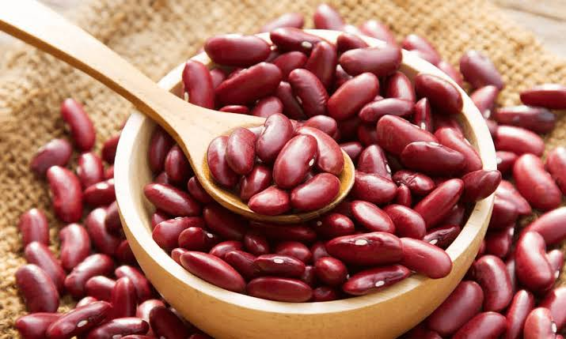

Kidney Beans - Rs.40/per kg
Support our locals who are working on the agricultural fields throughout day and night to protect our natural foods and herbs. Buy now.
Product Description
Kidney beans are a variety of the common bean (Phaseolus vulgaris), a legume native to Central America and Mexico. The common bean is an important food crop and major source of protein throughout the world. Used in a variety of traditional dishes, kidney beans are usually eaten well cooked. Raw or improperly cooked kidney beans are toxic, but well-prepared beans can be a healthy component of a well-balanced diet. They come in a variety of colors and patterns, including white, cream, black, red, purple, spotted, striped, and mottled. Although the nutritional quality of bean protein is generally lower than that of animal protein, beans are an affordable alternative for many people. In fact, beans are one the richest plant-based sources of protein, sometimes referred to as “poor man’s meat”.
Testimonials
Excess weight gain and obesity are major health problems, associated with an increased risk of various chronic diseases. Several observational studies link bean consumption to a lower risk of excess weight gain and obesity. A 2-month study in 30 obese adults on a weight loss diet showed that eating beans and other legumes 4 times per week led to greater weight loss than a bean-free diet. A recent review of 11 studies also found some supporting evidence but was unable to draw a firm conclusion. Various mechanisms may contribute to the beneficial effects of beans on weight loss. These include fibers, proteins, and antinutrients. Among the most widely studied antinutrients in raw kidney beans are starch blockers, a class of proteins that impair or delay the digestion and absorption of carbs (starch) from your digestive tract. Starch blockers, extracted from white kidney beans, demonstrate some potential as a weight loss supplement. However, boiling for 10 minutes completely inactivates starch blockers, eliminating their effect in fully cooked beans. Even so, cooked kidney beans offer a number of weight-loss-friendly compounds, making them an excellent addition to an effective weight loss diet.
Source: Click here